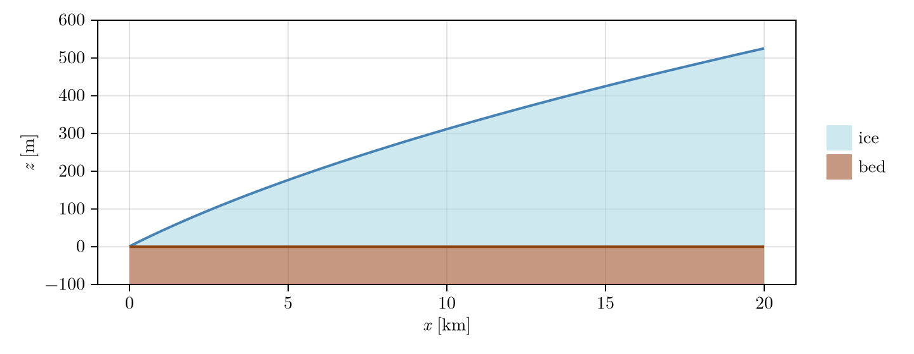
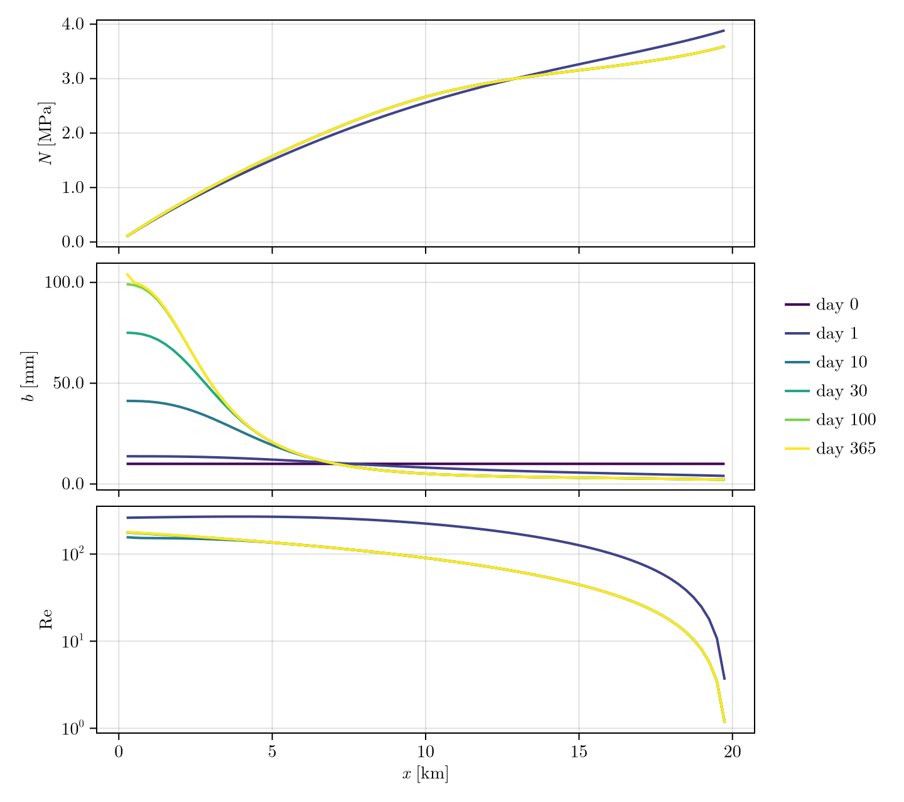

Tutorial
One runnable script, every decision from the grid to the plots, on a synthetic glacier. Each step lists the options as Option(...) what it does, when to pick it; the live line below the list is the default or a typical pick. Change it to switch.
Steps: 1 preferences, 2 grid, 3 mask, 4 state, 5 parameters, 6 sliding law and melt input, 7 the sheet, 8 solvers, 9 gap scheme and time step, 10 output, 11 run and check, 12 coupling, 13 plot.
This page runs when the docs are built: one year of 1-day steps on an 80 x 20 grid, in under a minute.
using Shakti
using NetCDF
using CairoMakie
using Statistics: mean1. Preferences
Set once, before using Shakti, then restart Julia (set_preferences! writes LocalPreferences.toml).
backend:
"Threads"(default) CPU kernels; the only backend the sparse direct solvers (and CUDSS) work with"CUDA","Metal"fields live on the GPU; the matrix-free solvers work there:BiCGStabIterativeSolver(grid)for the default sheet,CGIterativeSolver(grid, MatrixFreeLinearSystem)for the filled sheet
floattype:
"Float64"(default)"Float32"halves memory, looser tolerances
cudss:
true(default) load CUDA.jl/CUDSS.jl under"Threads", soCUDSSDirectSolverworks on a GPU nodefalseCPU-only work, saves minutes of load time
Threads: start Julia with -t N.
backend, floattype("Threads", Float64)2. Grid
Grid(nx, ny, lx, ly)regular grid ofnx x nycells overlx x lymetres; cell centres ingrid.x,grid.y
nx, ny = 80, 20
grid = Grid(nx, ny, 20000.0, 5000.0)Grid{Float64, Vector{Float64}}(80, 20, 20000.0, 5000.0, 253.16455696202533, 263.1578947368421, [0.0, 253.16455696202533, 506.32911392405066, 759.493670886076, 1012.6582278481013, 1265.8227848101267, 1518.987341772152, 1772.1518987341772, 2025.3164556962026, 2278.481012658228 … 17721.518987341773, 17974.683544303796, 18227.848101265823, 18481.01265822785, 18734.177215189873, 18987.3417721519, 19240.506329113923, 19493.67088607595, 19746.835443037973, 20000.0], [0.0, 263.1578947368421, 526.3157894736842, 789.4736842105264, 1052.6315789473683, 1315.7894736842106, 1578.9473684210527, 1842.1052631578948, 2105.2631578947367, 2368.4210526315787, 2631.5789473684213, 2894.7368421052633, 3157.8947368421054, 3421.0526315789475, 3684.2105263157896, 3947.3684210526317, 4210.526315789473, 4473.684210526316, 4736.8421052631575, 5000.0], 64092.292901778565, 69252.07756232686)3. Mask
One code per cell. It sets the boundary conditions:
GROUNDEDgrounded ice, solvedLANDice-free land: an outlet at atmospheric pressureOCEANocean or floating ice: an outlet at the sea-water pressure of the bedOTHER_BASINice outside the basin or no data: closed, no water crossesFROZEN_BEDfrozen bed:p_w = 0, closed (set byupdate_frozen_mask!, step 12)
The grid edge is closed, so every grounded region needs an outlet. Water leaves through LAND/OCEAN faces and never enters (outflow_only_land, outflow_only_ocean, step 5).
mask = fill(GROUNDED, nx, ny)
mask[1, :] .= LAND # terminus at x = 0
mask[end, :] .= OTHER_BASIN
mask[:, [1, end]] .= OTHER_BASIN80×2 view(::Matrix{Float64}, :, [1, 20]) with eltype Float64:
3.0 3.0
3.0 3.0
3.0 3.0
3.0 3.0
3.0 3.0
3.0 3.0
3.0 3.0
3.0 3.0
3.0 3.0
3.0 3.0
⋮
3.0 3.0
3.0 3.0
3.0 3.0
3.0 3.0
3.0 3.0
3.0 3.0
3.0 3.0
3.0 3.0
3.0 3.04. State and initial conditions
set_initial_conditions! fills a State from the geometry and the inputs below, all SI:
zb,zsbed and surface elevation [m]binitial gap height [m]; keep it aboveb_min(step 5)A_viscice rate factor [Pa^-3 s^-1]Ggeothermal flux [W/m2]ub_x,ub_ysliding speed on the x- and y-faces [m/s]iebwater input from above [m/s]taub_x,taub_ybasal shear stress on the faces [Pa] (used byPrescribedSlidingLawonly)
zb = zeros(nx, ny)
zs = [6 * (sqrt(x + 5000.0) - sqrt(5000.0)) + 1 for x in grid.x, y in grid.y] # SHMIP (de Fleurian et al. 2018)
b = fill(0.01, nx, ny)
A_visc = fill(5e-25, nx, ny)
G = fill(0.05, nx, ny)
ub_x = fill(1e-6, nx + 1, ny)
ub_y = zeros(nx, ny + 1)
ieb = fill(1.0 / (365 * 86400.0), nx, ny) # 1 m/a
taub_x, taub_y = zeros(nx + 1, ny), zeros(nx, ny + 1)([0.0 0.0 … 0.0 0.0; 0.0 0.0 … 0.0 0.0; … ; 0.0 0.0 … 0.0 0.0; 0.0 0.0 … 0.0 0.0], [0.0 0.0 … 0.0 0.0; 0.0 0.0 … 0.0 0.0; … ; 0.0 0.0 … 0.0 0.0; 0.0 0.0 … 0.0 0.0])The geometry along x (the slab is uniform in y): a flat bed and the ice-sheet margin of SHMIP, 1 m thick at the outlet and about 520 m thick 20 km inland.
xg = grid.x ./ 1e3
geo = Figure(size = (720, 280))
axg = Axis(geo[1, 1]; xlabel = L"x\ [\mathrm{km}]", ylabel = L"z\ [\mathrm{m}]",
xtickformat = vs -> [L"%$(round(Int, v))" for v in vs], ytickformat = vs -> [L"%$(round(Int, v))" for v in vs])
band!(axg, xg, zb[:, 1], zs[:, 1]; color = (:lightblue, 0.6), label = L"\mathrm{ice}")
band!(axg, xg, fill(-100.0, nx), zb[:, 1]; color = (:sienna, 0.6), label = L"\mathrm{bed}")
lines!(axg, xg, zs[:, 1]; color = :steelblue, linewidth = 2)
lines!(axg, xg, zb[:, 1]; color = :saddlebrown, linewidth = 2)
ylims!(axg, -100, 600)
Legend(geo[1, 2], axg; framevisible = false)
geo
5. Parameters
ModelParameters(; ...), every field has a default. The ones that change results most:
omega = 1e-3laminar-turbulent transition (Sommers et al. 2018, Table 2)br = 0.1,lr = 2.0bed-bump height and spacing [m];br = 0switches opening by sliding offct = 7.5e-8pressure-melting coefficient;0drops the sensible-heat term (as ISSM's SHAKTI does)b_min = 1e-6minimum gap height. On the default (unfilled) sheet it is a minimum cavity size, not only a numerical floor: where the melt cannot fill a gap ofb_min, the gap stays partly empty atp_w = 0andN = p_o. Drang Drung drains this way atb_min = 1e-3(meanN2.38 MPa against 0.63 MPa at1e-6), from a cold start and from the wet1e-6state alike. Keep it well below the initialbb_max = Infupper clamp; ISSM's SHAKTI uses1.0. A finite value hides a gap runaway,Infletscheck_gap_heightreport itN_min = -Inf,N_max = Infclamps ofN; off,IceUplift(step 7) is the physical bounde_v = 0englacial void ratio;0elliptic head equation,> 0parabolic (the head stores englacial water, see the Parabolic scheme page)outflow_only_land = true,outflow_only_ocean = trueoutlets let water out, never in;falsefor tidal intrusionb_c = 0creep cutoff length (SUHMO); non-zero selectsCreepCutoff. Dataset-dependent runaways: opt in with careT_freeze = -1.0,T_hysteresis = 0.5[K] used byupdate_frozen_mask!(step 12): a cell freezes when its basal temperature relative to pressure melting drops belowT_freezeand thaws atT_freeze + T_hysteresis;0hysteresis gives one threshold, at which a cell can flickermdot_includes_G,_frictional,_potential,_sensible,_qT(alltrue) switch one term of the melt rate off: geothermal flux, frictional heating, potential-energy dissipation, sensible heat, conductive heat into the icelimit_freeze_on = truefloors the melt rate at the freeze-on the gap can absorb this step (freeze_on_capacity!, step 12), so freezing never takesbbelowb_minor more water than a cell holds;falselets the melt rate freeze as much as the energy balance asks- Constants, SI, rarely changed:
rho_w = 1000,rho_sw = 1027(sea water, for theOCEANpressure),rho_i = 910,g = 9.81,nu = 1.787e-6(water viscosity),n = 3(Glen's exponent),L = 334e3(latent heat),cw = 4.22e3(water heat capacity),p_atm = 0(the pressure ofLANDoutlets)
p = ModelParameters()ModelParameters{Float64, Int64, Int64, Float64}(1000.0, 1027.0, 910.0, 9.81, 1.787e-6, 3.0, 0.001, 334000.0, 0.1, 2.0, 0.0, 7.5e-8, 4220.0, 0.0, 1.0e-6, Inf, -Inf, Inf, 0.0, -1.0, 0.5, true, true, true, true, true, true, true, true, 3, 2, 0.3333333333333333)6. Sliding law and melt input
Sliding law (tau_b, which feeds frictional melt):
RegularizedCoulombSlidingLaw(C)scalarC,lambda = 1.5 Afrom the initialA_viscRegularizedCoulombFieldSlidingLaw(grid, C)Ca cell fieldRegularizedCoulombV0SlidingLaw(grid, C, v0; q = 1/3)Joughin et al. (2019),v0in m/sLinearSlidingLaw(grid, C)tau_b = C^2 N u_bPrescribedSlidingLaw()keep thetaub_x,taub_ygiven in step 4 (e.g. from an ice-flow model)
Melt input (water from above):
ConstantMeltInput()theiebof step 4, unchangedSeasonalMeltInput(; t_start, t_end, amplitude, offset, i_min)Sommers et al. (2018) Sect. 3.3, see the Seasonal melt pageGaussianMoulinMeltInput(grid, x0, y0, sigma, Q_max, ramp_duration)one moulin [m3/s], ramped up- a coupled model adds its own with
set_ieb_external!(step 12)
sl = RegularizedCoulombSlidingLaw(0.25)
mi = ConstantMeltInput()
state = State(grid)
set_initial_conditions!(state, grid, p, sl, mask, A_visc, zb, zs, b, G, ub_x, ub_y, ieb, taub_x, taub_y)80×20 Matrix{Float64}:
0.0 0.0 0.0 0.0 0.0 0.0 … 0.0 0.0 0.0 0.0 0.0 0.0
0.0 0.01 0.01 0.01 0.01 0.01 0.01 0.01 0.01 0.01 0.01 0.0
0.0 0.01 0.01 0.01 0.01 0.01 0.01 0.01 0.01 0.01 0.01 0.0
0.0 0.01 0.01 0.01 0.01 0.01 0.01 0.01 0.01 0.01 0.01 0.0
0.0 0.01 0.01 0.01 0.01 0.01 0.01 0.01 0.01 0.01 0.01 0.0
0.0 0.01 0.01 0.01 0.01 0.01 … 0.01 0.01 0.01 0.01 0.01 0.0
0.0 0.01 0.01 0.01 0.01 0.01 0.01 0.01 0.01 0.01 0.01 0.0
0.0 0.01 0.01 0.01 0.01 0.01 0.01 0.01 0.01 0.01 0.01 0.0
0.0 0.01 0.01 0.01 0.01 0.01 0.01 0.01 0.01 0.01 0.01 0.0
0.0 0.01 0.01 0.01 0.01 0.01 0.01 0.01 0.01 0.01 0.01 0.0
⋮ ⋮ ⋱ ⋮
0.0 0.01 0.01 0.01 0.01 0.01 0.01 0.01 0.01 0.01 0.01 0.0
0.0 0.01 0.01 0.01 0.01 0.01 0.01 0.01 0.01 0.01 0.01 0.0
0.0 0.01 0.01 0.01 0.01 0.01 0.01 0.01 0.01 0.01 0.01 0.0
0.0 0.01 0.01 0.01 0.01 0.01 0.01 0.01 0.01 0.01 0.01 0.0
0.0 0.01 0.01 0.01 0.01 0.01 … 0.01 0.01 0.01 0.01 0.01 0.0
0.0 0.01 0.01 0.01 0.01 0.01 0.01 0.01 0.01 0.01 0.01 0.0
0.0 0.01 0.01 0.01 0.01 0.01 0.01 0.01 0.01 0.01 0.01 0.0
0.0 0.01 0.01 0.01 0.01 0.01 0.01 0.01 0.01 0.01 0.01 0.0
0.0 0.0 0.0 0.0 0.0 0.0 0.0 0.0 0.0 0.0 0.0 0.07. The sheet
The defaults are the GlaDS-2 sheet. Each keyword of Simulation has an opt-out:
cavity_filling = UnfilledCavities()(default) a head below the bed empties the cavity,p_w >= 0FilledCavities()SHAKTI's always-full gap;p_w < 0(suction) appears where the gap cannot hold the head
uplift = IceUplift()(default) water above the overburden lifts the ice,p_w <= p_oNoUplift()SHAKTI's,N < 0allowed
hydraulic_potential = SheetTopPotential()(default)q = -K grad(h + b)BedPotential()q = -K grad(h), the original equations
k_face_choice = "implicit_upwind"(default with the two above) face conductance from the upwind water depth at the end of the step: no time-step limit, needs an LU solver (step 8); on the filled sheet's dry floor withExplicitGapSchemeit warns, because the explicit gap update overshoots the water depths the faces conduct by (use the defaultFullyImplicitGapScheme)"upwind"symmetric matrix (Cholesky, CG, Newton allowed), but stable only fordt < dx W / (3|q|)(minutes at 100 m); warns with unfilled cavities or uplift"arithmetic"(default withFilledCavities/NoUplift),"harmonic"averaged faces; refused with unfilled cavities or uplift, where they create water
gap_coupling = ConsistentGapCoupling()(default with a Picard solver) the head equation uses the gap change the gap scheme makes: the water budget closesExplicitGapCoupling()SHAKTI's: the head equation assumesdt*rate(N, b_old). Creates water wherebis clamped (13 times the melt on Drang Drung) and can let the gap run away atN < 0; use it only to reproduce SHAKTI/ISSM
Which to choose:
- default: physically bounded
p_w, closed budget, large steps (hours to days) - SHAKTI's sheet:
sheet = ShaktiSheet()(the same ascavity_filling = FilledCavities(), uplift = NoUplift()), and Cholesky is allowed - the original equations bit for bit:
sheet = ShaktiSheet(original = true)(alsohydraulic_potential = BedPotential(), gap_coupling = ExplicitGapCoupling()) - any keyword above overrides the field of the
sheetit names (GlaDS2Sheet()by default)
8. Solvers
Head solve, ps, for any e_v:
PicardSolver(iters, tol, ls, grid; alpha = nothing, atol = 0)fixed-point iteration;alpha < 1under-relaxes a stalling solve,atol > 0[m] replaces the relative test
Linear solver ls:
LUDirectSolver(grid)UMFPACK LU, CPU; the default sheet's matrix is non-symmetricCUDSSDirectSolver(grid)(structure = :general, the default) the same on a GPU node (fields stay on the CPU); the fastest on large gridsCholeskyDirectSolver(grid),CUDSSDirectSolver(grid; structure = :spd)symmetric matrices only: SHAKTI's sheet or"upwind"CGIterativeSolver(grid, SparseAssembledLinearSystem; amg = true)symmetric only, CPUCGIterativeSolver(grid, MatrixFreeLinearSystem)symmetric only, matrix-free with the same multigrid preconditioner, GPU-resident: about 0.07 s per quiet step on an A100 at 800 x 200 and 0.08 s at 1600 x 400 (CUDSSDirectSolver(grid; structure = :spd): 0.10 s and 0.24 s);multigrid = falsegives JacobiBiCGStabIterativeSolver(grid)matrix-free with a multigrid preconditioner, GPU-resident: the default sheet with fields on the GPU, about 0.2 s per step on an A100 from 800 x 200 to 1600 x 400 cells (CUDSSDirectSolveris faster on smaller grids, slower on larger ones)
Simulation refuses Cholesky and CG with the default sheet, and names the opt-outs.
Other solver keywords of Simulation:
head_extrapolation_order = 1(default) the first guess of each head solve is the head extrapolated in time from the last converged steps (1linear,2quadratic): fewer Picard iterations, the same answer.0starts from the previous headcell_N_clamping = NoCellNClamping()(default)CellNClamping(Dict((i, j) => (nmin, nmax)))clampsNin the named cells only, on top of the globalN_min/N_maxof step 5: a patch for a few cells that misbehave, leaving the rest of the domain free to reach low or negativeNdiffusion_scheme = NoDiffusion()(default)WithDiffusion(ls)adds SUHMO's channel-wall diffusion of the gap. It solves a second linear system, for the gap, solsis a second solver instance next to the head solver's; see the SUHMO page
ps = PicardSolver(200, 1e-6, LUDirectSolver(grid), grid)PicardSolver{Float64, LUDirectSolver{SparseArrays.UMFPACK.UmfpackLU{Float64, Int64}, SparseAssembledLinearSystem{Float64}, Vector{Float64}, Nothing, Float64}, NoHeadRelaxation, Matrix{Float64}}(200, 1.0e-6, LUDirectSolver{SparseArrays.UMFPACK.UmfpackLU{Float64, Int64}, SparseAssembledLinearSystem{Float64}, Vector{Float64}, Nothing, Float64}(SparseAssembledLinearSystem{Float64}(sparse([1, 2, 81, 1, 2, 3, 82, 2, 3, 4 … 1597, 1598, 1599, 1519, 1598, 1599, 1600, 1520, 1599, 1600], [1, 1, 1, 2, 2, 2, 2, 3, 3, 3 … 1598, 1598, 1598, 1599, 1599, 1599, 1599, 1600, 1600, 1600], [1.0, 0.0, 0.0, 0.0, 1.0, 0.0, 0.0, 0.0, 1.0, 0.0 … 0.0, 1.0, 0.0, 0.0, 0.0, 1.0, 0.0, 0.0, 0.0, 1.0], 1600, 1600), [0.0, 0.0, 0.0, 0.0, 0.0, 0.0, 0.0, 0.0, 0.0, 0.0 … 0.0, 0.0, 0.0, 0.0, 0.0, 0.0, 0.0, 0.0, 0.0, 0.0], [1 320 … 7086 7484; 5 325 … 7091 7488; … ; 313 710 … 7476 7796; 317 715 … 7481 7800], [4 324 … 7090 7487; 8 329 … 7095 7491; … ; 316 714 … 7480 7799; 0 0 … 0 0], [0 0 … 0 0; 2 321 … 7087 7485; … ; 310 706 … 7472 7793; 314 711 … 7477 7797], [319 717 … 7483 0; 323 721 … 7486 0; … ; 708 1106 … 7794 0; 713 1111 … 7798 0], [0 3 … 6690 7088; 0 7 … 6695 7093; … ; 0 315 … 7080 7478; 0 318 … 7084 7482]), SparseArrays.UMFPACK.UmfpackLU{Float64, Int64}(SparseArrays.UMFPACK.Symbolic{Float64, Int64}(Ptr{Nothing}(0x000000002899c990)), SparseArrays.UMFPACK.Numeric{Float64, Int64}(Ptr{Nothing}(0x0000000027a414b0)), 1600, 1600, [0, 3, 7, 11, 15, 19, 23, 27, 31, 35 … 7765, 7769, 7773, 7777, 7781, 7785, 7789, 7793, 7797, 7800], [0, 1, 80, 0, 1, 2, 81, 1, 2, 3 … 1596, 1597, 1598, 1518, 1597, 1598, 1599, 1519, 1598, 1599], [1.0, 0.0, 0.0, 0.0, 1.0, 0.0, 0.0, 0.0, 1.0, 0.0 … 0.0, 1.0, 0.0, 0.0, 0.0, 1.0, 0.0, 0.0, 0.0, 1.0], 0, SparseArrays.UMFPACK.UmfpackWS{Int64}([722201176, 0, 139637976727552, 34359738369, 4294967297, 665069048, 0, 24017, 140669158968096, 140669158968096 … 240669163520, 708785640, 703354832, 727027968, 140737340506113, 708785640, 140668792547984, 140737340857256, 4, 708769064], [6.949979887645e-310, 3.474901314e-315, 0.0, 0.0, 7.351677844385741e223, 6.953758987035787e-309, 3.60742134e-315, 3.858751626e-315, 8.6984213209236e-311, 1.946945992181174e-308 … 2.121995791e-314, 3.772133973e-315, NaN, 3.607478613e-315, 3.772132313e-315, 0.0, 3.772133973e-315, 3.607570786e-315, NaN, 3.772136187e-315]), [1.0, 0.2, 0.2, 0.1, 32.0, 0.0, 0.7, 0.0, 1.0, 0.3, 1.0, 1.0, 0.9, 0.0, 10.0, 0.001, 1.0, 0.5, 0.0, 1.0], [0.0, 1600.0, 7800.0, 16.0, 4.0, 8.0, 8.0, 8.0, 0.0, 0.0 … -1.0, -1.0, -1.0, -1.0, -1.0, -1.0, -1.0, -1.0, -1.0, -1.0], ReentrantLock()), [0.0, 0.0, 0.0, 0.0, 0.0, 0.0, 0.0, 0.0, 0.0, 0.0 … 0.0, 0.0, 0.0, 0.0, 0.0, 0.0, 0.0, 0.0, 0.0, 0.0], nothing, 1.0e-10, 20, Base.RefValue{Bool}(false), Base.RefValue{Int64}(0)), false, 0, NoHeadRelaxation(), [0.0 0.0 … 0.0 0.0; 0.0 0.0 … 0.0 0.0; … ; 0.0 0.0 … 0.0 0.0; 0.0 0.0 … 0.0 0.0], [0.0 0.0 … 0.0 0.0; 0.0 0.0 … 0.0 0.0; … ; 0.0 0.0 … 0.0 0.0; 0.0 0.0 … 0.0 0.0], [0.0 0.0 … 0.0 0.0; 0.0 0.0 … 0.0 0.0; … ; 0.0 0.0 … 0.0 0.0; 0.0 0.0 … 0.0 0.0], 1, 0.0)9. Gap scheme and time step
gap_scheme (keyword):
FullyImplicitGapScheme()(default) unconditionally stable for any bump heightExplicitGapScheme()forward Euler; small steps only
Under WithDiffusion the choice is ignored: the diffusive gap solve has its own scheme.
Time step:
FixedTimeStep()(default)dtevery step; with the default sheet hours to days workAdaptiveTimeStep(grid, state; dt_min, dt_max, target_time)dthalved when the head solve does not converge (the step is retried) and grown after fast steps;safety_factoradds an optional cap from the creep and sliding rates;run!stops attarget_time
dt, nsteps = 86400.0, 365(86400.0, 365)10. Output
observer (keyword), given the State field names to record (obs, e.g. "N", "b", "h", "Re", "q_x", "W") and the step indices to record them at (times, 0 = initial state):
IOObserver(obs, times, NetCDFFileWriter(), path)(orHDF5FileWriter(),JLD2FileWriter()) fields written topath; use this for long runsIOObserver(obs, times, CSVFileWriter(), path)min, max and mean per field and time onlyLiveObserver(obs, times)kept in memory, for short interactive runsNoObserver()(default) nothing recorded
Checkpoints: run!(sim; checkpoint_every, checkpoint_path), then restart_path resumes a killed run and extend_path continues a finished one into a new file. A checkpoint keeps the state, dt, the head-extrapolation history, AdaptiveTimeStep's controller (the step it asks for, its fast-step count and its count of rejected steps) and the totals of the water budget (sim.wb, step 11), so a resumed run continues the counts of an uninterrupted one. A checkpoint written before any of these were saved restarts that part from zero.
path = joinpath(mktempdir(), "tutorial.nc")
sim = Simulation(grid, state, nsteps, floattype(dt), p, mi, sl; ps = ps,
observer = IOObserver(["N", "b", "Re", "po"], 0:nsteps, NetCDFFileWriter(), path))Simulation{Float64, ModelParameters{Float64, Int64, Int64, Float64}, PicardHeadScheme{PicardSolver{Float64, LUDirectSolver{SparseArrays.UMFPACK.UmfpackLU{Float64, Int64}, SparseAssembledLinearSystem{Float64}, Vector{Float64}, Nothing, Float64}, NoHeadRelaxation, Matrix{Float64}}}, FullyImplicitGapScheme, MeltTerms{true, true, true, true, true}, WithOpenBySliding, StandardCreep, NoDiffusion, IOObserver{NetCDFFileWriter}, Grid{Float64, Vector{Float64}}, State{Matrix{Float64}}, ConstantMeltInput, ImplicitUpwind, RegularizedCoulombSlidingLaw{Float64}, NoCellNClamping, FixedTimeStep, HeadExtrapolation{Matrix{Float64}}, UnfilledCavities, SheetTopPotential, IceUplift, ConsistentGapCoupling, WaterBudget{Float64, Matrix{Float64}}}(365, Base.RefValue{Float64}(86400.0), ModelParameters{Float64, Int64, Int64, Float64}(1000.0, 1027.0, 910.0, 9.81, 1.787e-6, 3.0, 0.001, 334000.0, 0.1, 2.0, 0.0, 7.5e-8, 4220.0, 0.0, 1.0e-6, Inf, -Inf, Inf, 0.0, -1.0, 0.5, true, true, true, true, true, true, true, true, 3, 2, 0.3333333333333333), PicardHeadScheme{PicardSolver{Float64, LUDirectSolver{SparseArrays.UMFPACK.UmfpackLU{Float64, Int64}, SparseAssembledLinearSystem{Float64}, Vector{Float64}, Nothing, Float64}, NoHeadRelaxation, Matrix{Float64}}}(PicardSolver{Float64, LUDirectSolver{SparseArrays.UMFPACK.UmfpackLU{Float64, Int64}, SparseAssembledLinearSystem{Float64}, Vector{Float64}, Nothing, Float64}, NoHeadRelaxation, Matrix{Float64}}(200, 1.0e-6, LUDirectSolver{SparseArrays.UMFPACK.UmfpackLU{Float64, Int64}, SparseAssembledLinearSystem{Float64}, Vector{Float64}, Nothing, Float64}(SparseAssembledLinearSystem{Float64}(sparse([1, 2, 81, 1, 2, 3, 82, 2, 3, 4 … 1597, 1598, 1599, 1519, 1598, 1599, 1600, 1520, 1599, 1600], [1, 1, 1, 2, 2, 2, 2, 3, 3, 3 … 1598, 1598, 1598, 1599, 1599, 1599, 1599, 1600, 1600, 1600], [1.0, 0.0, 0.0, 0.0, 1.0, 0.0, 0.0, 0.0, 1.0, 0.0 … 0.0, 1.0, 0.0, 0.0, 0.0, 1.0, 0.0, 0.0, 0.0, 1.0], 1600, 1600), [0.0, 0.0, 0.0, 0.0, 0.0, 0.0, 0.0, 0.0, 0.0, 0.0 … 0.0, 0.0, 0.0, 0.0, 0.0, 0.0, 0.0, 0.0, 0.0, 0.0], [1 320 … 7086 7484; 5 325 … 7091 7488; … ; 313 710 … 7476 7796; 317 715 … 7481 7800], [4 324 … 7090 7487; 8 329 … 7095 7491; … ; 316 714 … 7480 7799; 0 0 … 0 0], [0 0 … 0 0; 2 321 … 7087 7485; … ; 310 706 … 7472 7793; 314 711 … 7477 7797], [319 717 … 7483 0; 323 721 … 7486 0; … ; 708 1106 … 7794 0; 713 1111 … 7798 0], [0 3 … 6690 7088; 0 7 … 6695 7093; … ; 0 315 … 7080 7478; 0 318 … 7084 7482]), SparseArrays.UMFPACK.UmfpackLU{Float64, Int64}(SparseArrays.UMFPACK.Symbolic{Float64, Int64}(Ptr{Nothing}(0x000000002899c990)), SparseArrays.UMFPACK.Numeric{Float64, Int64}(Ptr{Nothing}(0x0000000027a414b0)), 1600, 1600, [0, 3, 7, 11, 15, 19, 23, 27, 31, 35 … 7765, 7769, 7773, 7777, 7781, 7785, 7789, 7793, 7797, 7800], [0, 1, 80, 0, 1, 2, 81, 1, 2, 3 … 1596, 1597, 1598, 1518, 1597, 1598, 1599, 1519, 1598, 1599], [1.0, 0.0, 0.0, 0.0, 1.0, 0.0, 0.0, 0.0, 1.0, 0.0 … 0.0, 1.0, 0.0, 0.0, 0.0, 1.0, 0.0, 0.0, 0.0, 1.0], 0, SparseArrays.UMFPACK.UmfpackWS{Int64}([722201176, 0, 139637976727552, 34359738369, 4294967297, 665069048, 0, 24017, 140669158968096, 140669158968096 … 240669163520, 708785640, 703354832, 727027968, 140737340506113, 708785640, 140668792547984, 140737340857256, 4, 708769064], [6.949979887645e-310, 3.474901314e-315, 0.0, 0.0, 7.351677844385741e223, 6.953758987035787e-309, 3.60742134e-315, 3.858751626e-315, 8.6984213209236e-311, 1.946945992181174e-308 … 2.121995791e-314, 3.772133973e-315, NaN, 3.607478613e-315, 3.772132313e-315, 0.0, 3.772133973e-315, 3.607570786e-315, NaN, 3.772136187e-315]), [1.0, 0.2, 0.2, 0.1, 32.0, 0.0, 0.7, 0.0, 1.0, 0.3, 1.0, 1.0, 0.9, 0.0, 10.0, 0.001, 1.0, 0.5, 0.0, 1.0], [0.0, 1600.0, 7800.0, 16.0, 4.0, 8.0, 8.0, 8.0, 0.0, 0.0 … -1.0, -1.0, -1.0, -1.0, -1.0, -1.0, -1.0, -1.0, -1.0, -1.0], ReentrantLock()), [0.0, 0.0, 0.0, 0.0, 0.0, 0.0, 0.0, 0.0, 0.0, 0.0 … 0.0, 0.0, 0.0, 0.0, 0.0, 0.0, 0.0, 0.0, 0.0, 0.0], nothing, 1.0e-10, 20, Base.RefValue{Bool}(false), Base.RefValue{Int64}(0)), false, 0, NoHeadRelaxation(), [0.0 0.0 … 0.0 0.0; 0.0 0.0 … 0.0 0.0; … ; 0.0 0.0 … 0.0 0.0; 0.0 0.0 … 0.0 0.0], [0.0 0.0 … 0.0 0.0; 0.0 0.0 … 0.0 0.0; … ; 0.0 0.0 … 0.0 0.0; 0.0 0.0 … 0.0 0.0], [0.0 0.0 … 0.0 0.0; 0.0 0.0 … 0.0 0.0; … ; 0.0 0.0 … 0.0 0.0; 0.0 0.0 … 0.0 0.0], 1, 0.0)), FullyImplicitGapScheme(), MeltTerms{true, true, true, true, true}(), WithOpenBySliding(), StandardCreep(), NoDiffusion(), IOObserver{NetCDFFileWriter}(["N", "b", "Re", "po"], 0:365, NetCDFFileWriter(), "/tmp/jl_0ndyAE/tutorial.nc", Base.RefValue{Any}(nothing), Dict(173 => 174, 6 => 7, 107 => 108, 189 => 190, 274 => 275, 22 => 23, 258 => 259, 91 => 92, 205 => 206, 38 => 39…)), Grid{Float64, Vector{Float64}}(80, 20, 20000.0, 5000.0, 253.16455696202533, 263.1578947368421, [0.0, 253.16455696202533, 506.32911392405066, 759.493670886076, 1012.6582278481013, 1265.8227848101267, 1518.987341772152, 1772.1518987341772, 2025.3164556962026, 2278.481012658228 … 17721.518987341773, 17974.683544303796, 18227.848101265823, 18481.01265822785, 18734.177215189873, 18987.3417721519, 19240.506329113923, 19493.67088607595, 19746.835443037973, 20000.0], [0.0, 263.1578947368421, 526.3157894736842, 789.4736842105264, 1052.6315789473683, 1315.7894736842106, 1578.9473684210527, 1842.1052631578948, 2105.2631578947367, 2368.4210526315787, 2631.5789473684213, 2894.7368421052633, 3157.8947368421054, 3421.0526315789475, 3684.2105263157896, 3947.3684210526317, 4210.526315789473, 4473.684210526316, 4736.8421052631575, 5000.0], 64092.292901778565, 69252.07756232686), State{Matrix{Float64}}([0.0 0.0 … 0.0 0.0; 0.0 5.277198763798928 … 5.277198763798928 0.0; … ; 0.0 236.87006387527353 … 236.87006387527353 0.0; 0.0 0.0 … 0.0 0.0], [0.0 0.0 … 0.0 0.0; 0.0 51769.31987286749 … 51769.31987286749 0.0; … ; 0.0 2.3236953266164334e6 … 2.3236953266164334e6 0.0; 0.0 0.0 … 0.0 0.0], [8927.1 8927.1 … 8927.1 8927.1; 103627.91074573496 103538.63974573497 … 103538.63974573497 103627.91074573496; … ; 4.647479924232868e6 4.647390653232867e6 … 4.647390653232867e6 4.647479924232868e6; 4.690470002228486e6 4.690470002228486e6 … 4.690470002228486e6 4.690470002228486e6], [0.0 0.0 … 0.0 0.0; 0.0 0.01 … 0.01 0.0; … ; 0.0 0.01 … 0.01 0.0; 0.0 0.0 … 0.0 0.0], [0.004154729037172738 0.0041564923351694654 … 0.0041564923351694654 0.004154729037172738; 0.004154729037172738 0.013744853237700784 … 0.013744853237700784 0.004154729037172738; … ; 0.004154729037172738 0.009090068259950072 … 0.009090068259950072 0.004154729037172738; 0.004154729037172738 0.00419097790854993 … 0.00419097790854993 0.004154729037172738], [0.0 0.0 … 0.0 0.0; 0.0 4.48938533118313e-8 … 4.48938533118313e-8 0.0; … ; 0.0 3.9364789358448354e-5 … 3.9364789358448354e-5 0.0; 0.0 0.0 … 0.0 0.0], [0.0 0.0 … 0.0 0.0; 0.0 0.01 … 0.01 0.0; … ; 0.0 0.01 … 0.01 0.0; 0.0 0.0 … 0.0 0.0], [0.0 0.0 … 0.0 0.0; 0.0 1.1574074074074073e-5 … 1.1574074074074073e-5 0.0; … ; 0.0 1.1574074074074073e-5 … 1.1574074074074073e-5 0.0; 0.0 0.0 … 0.0 0.0], [0.0 0.0 … 0.0 0.0; 0.0 1.1574074074074073e-5 … 1.1574074074074073e-5 0.0; … ; 0.0 1.1574074074074073e-5 … 1.1574074074074073e-5 0.0; 0.0 0.0 … 0.0 0.0], [0.0 0.0 … 0.0 0.0; 0.0 0.0 … 0.0 0.0; … ; 0.0 0.0 … 0.0 0.0; 0.0 0.0 … 0.0 0.0], [0.0 0.0 … 0.0 0.0; 0.0 0.0 … 0.0 0.0; … ; 0.0 0.0 … 0.0 0.0; 0.0 0.0 … 0.0 0.0], [0.05 0.05 … 0.05 0.05; 0.05 0.045000000000000005 … 0.045000000000000005 0.05; … ; 0.05 0.045000000000000005 … 0.045000000000000005 0.05; 0.05 0.05 … 0.05 0.05], [0.1 0.1 … 0.1 0.1; 0.1 0.1 … 0.1 0.1; … ; 0.1 0.1 … 0.1 0.1; 0.1 0.1 … 0.1 0.1], [0.0 0.0 … 0.0 0.0; 0.0 0.01 … 0.01 0.0; … ; 0.0 0.01 … 0.01 0.0; 0.0 0.0 … 0.0 0.0], [1.0e-6 1.0e-6 … 1.0e-6 1.0e-6; 1.0e-6 1.0e-6 … 1.0e-6 1.0e-6; … ; 1.0e-6 1.0e-6 … 1.0e-6 1.0e-6; 1.0e-6 1.0e-6 … 1.0e-6 1.0e-6], [1.4970059880239523e-7 1.3911380323169373e-6 … 1.3911380323169373e-6 1.4970059880239523e-7; 1.4970059880239523e-7 3.6605892466827254e-6 … 3.6605892466827254e-6 1.4970059880239523e-7; … ; 1.4970059880239523e-7 1.0844353355553054e-6 … 1.0844353355553054e-6 1.4970059880239523e-7; 1.4970059880239523e-7 5.479817166822955e-7 … 5.479817166822955e-7 1.4970059880239523e-7], [1.4970059880239523e-7 1.690746722730929e-7 … 1.690746722730929e-7 1.4970059880239523e-7; 1.4970059880239523e-7 1.9709590213748665e-7 … 1.9709590213748665e-7 1.4970059880239523e-7; … ; 1.4970059880239523e-7 9.460834684080835e-7 … 9.460834684080835e-7 1.4970059880239523e-7; 1.4970059880239523e-7 5.479817166822955e-7 … 5.479817166822955e-7 1.4970059880239523e-7], [0.0 0.0 … 0.0 0.0; 0.0 0.0 … 0.0 0.0; … ; 0.0 0.0 … 0.0 0.0; 0.0 0.0 … 0.0 0.0], [-0.0 -0.0 … -0.0 -0.0; -0.0 -0.00011574074074074076 … -0.00011574074074074076 -0.0; … ; -0.0 -0.00011574074074074076 … -0.00011574074074074076 -0.0; -0.0 -0.0 … -0.0 -0.0], [0.0 0.006470940539213021 … 0.006470940539213021 0.0; 0.0 0.015830031313920537 … 0.015830031313920537 0.0; … ; 0.0 0.2659918784482999 … 0.2659918784482999 0.0; 0.0 0.1330258933718867 … 0.1330258933718867 0.0], [0.0 0.5966525189622247 … 0.5966525189622247 0.0; 0.0 1.6914300599710062 … 1.6914300599710062 0.0; … ; 0.0 0.06760720355109318 … 0.06760720355109318 0.0; 0.0 0.0 … 0.0 0.0], [-0.0 -0.18848335670758062 … -0.18848335670758062 -0.0; -0.0 -0.5346232828928965 … -0.5346232828928965 -0.0; … ; -0.0 -0.021397679923921054 … -0.021397679923921054 -0.0; -0.0 -0.0 … -0.0 -0.0], [0.0 814.8453470712873 … 814.8453470712873 0.0; 0.0 1578.2116923595543 … 1578.2116923595543 0.0; … ; 0.0 221.65706978421548 … 221.65706978421548 0.0; 0.0 0.0 … 0.0 0.0], [0.0 0.0 … 0.0 0.0; 0.0 0.17743718349756513 … 0.17743718349756513 0.0; … ; 0.0 0.37446729730265005 … 0.37446729730265005 0.0; 0.0 0.0 … 0.0 0.0], [0.05 0.05 … 0.05 0.05; 0.05 0.05 … 0.05 0.05; … ; 0.05 0.05 … 0.05 0.05; 0.05 0.05 … 0.05 0.05], [0.0 0.0 … 0.0 0.0; 0.0 0.0 … 0.0 0.0; … ; 0.0 0.0 … 0.0 0.0; 0.0 0.0 … 0.0 0.0], [0.0 0.0 … 0.0 0.0; 0.0 0.0 … 0.0 0.0; … ; 0.0 0.0 … 0.0 0.0; 0.0 0.0 … 0.0 0.0], [1.0 1.0 … 1.0 1.0; 11.608239041316324 11.608239041316324 … 11.608239041316324 11.608239041316324; … ; 520.6035469786232 520.6035469786232 … 520.6035469786232 520.6035469786232; 525.4192293385854 525.4192293385854 … 525.4192293385854 525.4192293385854], [1.0 1.0 … 1.0 1.0; 11.608239041316324 11.598239041316324 … 11.598239041316324 11.608239041316324; … ; 520.6035469786232 520.5935469786232 … 520.5935469786232 520.6035469786232; 525.4192293385854 525.4192293385854 … 525.4192293385854 525.4192293385854], [3.1709791983764586e-8 3.1709791983764586e-8 … 3.1709791983764586e-8 3.1709791983764586e-8; 3.1709791983764586e-8 3.1709791983764586e-8 … 3.1709791983764586e-8 3.1709791983764586e-8; … ; 3.1709791983764586e-8 3.1709791983764586e-8 … 3.1709791983764586e-8 3.1709791983764586e-8; 3.1709791983764586e-8 3.1709791983764586e-8 … 3.1709791983764586e-8 3.1709791983764586e-8], [3.1709791983764586e-8 3.1709791983764586e-8 … 3.1709791983764586e-8 3.1709791983764586e-8; 3.1709791983764586e-8 3.1709791983764586e-8 … 3.1709791983764586e-8 3.1709791983764586e-8; … ; 3.1709791983764586e-8 3.1709791983764586e-8 … 3.1709791983764586e-8 3.1709791983764586e-8; 3.1709791983764586e-8 3.1709791983764586e-8 … 3.1709791983764586e-8 3.1709791983764586e-8], [0.0 0.0 … 0.0 0.0; 0.0 0.0 … 0.0 0.0; … ; 0.0 0.0 … 0.0 0.0; 0.0 0.0 … 0.0 0.0], [7.499999999999999e-25 7.499999999999999e-25 … 7.499999999999999e-25 7.499999999999999e-25; 7.499999999999999e-25 7.499999999999999e-25 … 7.499999999999999e-25 7.499999999999999e-25; … ; 7.499999999999999e-25 7.499999999999999e-25 … 7.499999999999999e-25 7.499999999999999e-25; 7.499999999999999e-25 7.499999999999999e-25 … 7.499999999999999e-25 7.499999999999999e-25], [5.0e-25 5.0e-25 … 5.0e-25 5.0e-25; 5.0e-25 5.0e-25 … 5.0e-25 5.0e-25; … ; 5.0e-25 5.0e-25 … 5.0e-25 5.0e-25; 5.0e-25 5.0e-25 … 5.0e-25 5.0e-25], [0.0 0.0 … 0.0 0.0; 0.0 51769.319872867476 … 51769.319872867476 0.0; … ; 0.0 2.3236953266164334e6 … 2.3236953266164334e6 0.0; 0.0 0.0 … 0.0 0.0], [3.0 2.0 … 2.0 3.0; 3.0 0.0 … 0.0 3.0; … ; 3.0 0.0 … 0.0 3.0; 3.0 3.0 … 3.0 3.0], [0.0 0.0 … 0.0 0.0; 0.0 0.020884435117005766 … 0.020884435117005766 0.0; … ; 0.0 -0.0 … -0.0 0.0; 0.0 0.0 … 0.0 0.0], [0.0 0.0 … 0.0 0.0; 0.0 0.01 … 0.01 0.0; … ; 0.0 0.0 … 0.0 0.0; 0.0 0.0 … 0.0 0.0], [-0.0 -0.0 … -0.0 -0.0; -0.0 -0.005824514540865562 … -0.005824514540865562 -0.0; … ; -0.0 0.0 … 0.0 -0.0; -0.0 -0.0 … -0.0 -0.0], [0.0 0.0 … 0.0 0.0; 0.0 3259.381388285149 … 3259.381388285149 0.0; … ; 0.0 0.0 … 0.0 0.0; 0.0 0.0 … 0.0 0.0], [0.0 0.0 … 0.0 0.0; 0.0 0.005 … 0.005 0.0; … ; 0.0 0.005 … 0.005 0.0; 0.0 0.0 … 0.0 0.0], [1.0e-6 1.0e-6 … 1.0e-6 1.0e-6; 1.0e-6 1.0e-6 … 1.0e-6 1.0e-6; … ; 1.0e-6 1.0e-6 … 1.0e-6 1.0e-6; 1.0e-6 1.0e-6 … 1.0e-6 1.0e-6], [0.0 0.0 … 0.0 0.0; 0.0 12941.881078426042 … 12941.881078426042 0.0; … ; 0.0 266051.7867437734 … 266051.7867437734 0.0; 0.0 0.0 … 0.0 0.0], [0.0 0.0 … 0.0 0.0; 0.0 204.48881349782658 … 204.48881349782658 0.0; … ; 0.0 -0.0 … -0.0 0.0; 0.0 0.0 … 0.0 0.0], [0.0 0.0 … 0.0 0.0; 0.0 0.0 … 0.0 0.0; … ; 0.0 0.0 … 0.0 0.0; 0.0 0.0 … 0.0 0.0], [0.0 0.0 … 0.0 0.0; 0.0 0.27889260629907003 … 0.27889260629907003 0.0; … ; 0.0 0.0 … 0.0 0.0; 0.0 0.0 … 0.0 0.0], [0.0 0.0 … 0.0 0.0; 0.0 3.2331653139999154e-8 … 3.2331653139999154e-8 0.0; … ; 0.0 0.0 … 0.0 0.0; 0.0 0.0 … 0.0 0.0], [0.0 0.0 … 0.0 0.0; 0.0 1.0 … 1.0 0.0; … ; 0.0 0.0 … 0.0 0.0; 0.0 0.0 … 0.0 0.0], [1.0 1.0 … 1.0 1.0; 0.0 1.0 … 1.0 0.0; … ; 0.0 0.0 … 0.0 0.0; 1.0 1.0 … 1.0 1.0], [0.0 0.0 … 0.0 0.0; 0.0 0.0 … -0.0 0.0; … ; 0.0 0.0 … -0.0 0.0; 0.0 0.0 … 0.0 0.0], [0.0 0.0 … 0.0 0.0; 0.0 0.0 … 0.0 0.0; … ; 0.0 0.0 … 0.0 0.0; 0.0 0.0 … 0.0 0.0], [-0.0 -0.0 … -0.0 -0.0; -0.0 -0.0 … 0.0 -0.0; … ; -0.0 -0.0 … 0.0 -0.0; -0.0 -0.0 … -0.0 -0.0], [0.0 0.0 … 0.0 0.0; 0.0 0.0 … 0.0 0.0; … ; 0.0 0.0 … 0.0 0.0; 0.0 0.0 … 0.0 0.0], [0.0 0.0 … 0.0 0.0; 0.0 0.005 … 0.005 0.0; … ; 0.0 0.005 … 0.005 0.0; 0.0 0.0 … 0.0 0.0], [0.0 0.0 … 0.0 0.0; 0.0 0.0 … 0.0 0.0; … ; 0.0 0.0 … 0.0 0.0; 0.0 0.0 … 0.0 0.0], [0.0 0.0 … 0.0 0.0; 0.0 0.0 … 0.0 0.0; … ; 0.0 0.0 … 0.0 0.0; 0.0 0.0 … 0.0 0.0], [0.0 0.0 … 0.0 0.0; 0.0 0.0 … -0.0 0.0; … ; 0.0 0.0 … -0.0 0.0; 0.0 0.0 … 0.0 0.0], [0.0 0.0 … 0.0 0.0; 0.0 0.0 … 0.0 0.0; … ; 0.0 0.0 … 0.0 0.0; 0.0 0.0 … 0.0 0.0], [0.0 0.0 … 0.0 0.0; 0.0 0.0 … 0.0 0.0; … ; 0.0 0.0 … 0.0 0.0; 0.0 0.0 … 0.0 0.0], [0.0 0.0 … 0.0 0.0; 0.0 0.0 … 0.0 0.0; … ; 0.0 0.0 … 0.0 0.0; 0.0 0.0 … 0.0 0.0], [0.0 0.0 … 0.0 0.0; 0.0 0.0 … 0.0 0.0; … ; 0.0 0.0 … 0.0 0.0; 0.0 0.0 … 0.0 0.0], [1.0 0.0 … 0.0 1.0; 1.0 0.0 … 0.0 1.0; … ; 1.0 0.0 … 0.0 1.0; 1.0 0.0 … 0.0 1.0]), ConstantMeltInput(), ImplicitUpwind(), RegularizedCoulombSlidingLaw{Float64}(0.25), false, Base.RefValue{Float64}(0.0), NoCellNClamping(), FixedTimeStep(), HeadExtrapolation{Matrix{Float64}}(1, [[0.0 0.0 … 0.0 0.0; 0.0 0.0 … 0.0 0.0; … ; 0.0 0.0 … 0.0 0.0; 0.0 0.0 … 0.0 0.0], [0.0 0.0 … 0.0 0.0; 0.0 0.0 … 0.0 0.0; … ; 0.0 0.0 … 0.0 0.0; 0.0 0.0 … 0.0 0.0]], [0.0, 0.0], 0, 0.0), UnfilledCavities(), SheetTopPotential(), IceUplift(), ConsistentGapCoupling(), WaterBudget{Float64, Matrix{Float64}}([3.72575133e-315 0.0 … NaN 4.2372013508193e-310; 3.643112564e-315 0.0 … 6.96e-321 4.29152444306803e-310; … ; 0.0 0.0 … 4.1285551663219e-310 4.34584774254274e-310; 0.0 0.0 … 4.1828782585706e-310 4.40017083479145e-310], [3.72575133e-315 0.05 … 0.05 0.05; 3.426925564e-315 0.0 … 0.0 0.05; … ; 0.05 0.04892322755075233 … 0.04892322755075233 0.05; 0.05 0.05 … 0.05 0.05], Base.RefValue{Float64}(0.0), Base.RefValue{Float64}(0.0), Base.RefValue{Float64}(0.0), Base.RefValue{Float64}(0.0), Base.RefValue{Float64}(0.0), Base.RefValue{Float64}(0.0), Base.RefValue{Int64}(0)))11. Run and check
After each gap update check_gap_height looks for a gap runaway: it errors if b is not finite in a grounded cell or exceeds the ice thickness there by more than 1 km (every later step would carry it), and warns once if it exceeds the thickness by less. Under FilledCavities, check_filled_sheet also warns once when cells reach p_w < 0 or a step creates water: a full gap has no other way to meet a closure its inflow cannot supply, and UnfilledCavities lets it part-empty instead.
Every sheet keeps a water budget, sim.wb, read with water_created(sim): per step the water created beyond sources and fluxes (created) against the grounded input, and over all steps total_created (net), total_input, gross_created and gross_lost (summed by sign over cells and steps, so water created in one place and lost in another does not cancel) and unconverged, the number of steps taken with an unconverged head solve. Such a step also warns once. verbose = true in Simulation prints, per step, the Picard iterations, dt under AdaptiveTimeStep, the water created and its fraction of the input, the count of unconverged steps once there is one, and under FilledCavities the cells at p_w < 0.
run!(sim)
gr = Array(state.mask) .== GROUNDED
(converged = sim.hs.ps.converged,
N_over_po = extrema(Array(state.N)[gr] ./ Array(state.po)[gr]),
b = extrema(Array(state.b)[gr]))(converged = true, N_over_po = (0.7718059859638939, 1.0), b = (0.002153544438888274, 0.10443822242589029))12. Coupling to an ice-flow model
Between steps (step!(sim) advances one) a host model can:
- change the geometry or sliding speed in
state(zs,zb,ub_x,ub_y), refreshed at the next step set_mask!(state, p, new_mask)follow its grounding line and ice extentupdate_frozen_mask!(state, p, T_prime_b)freeze and thaw cells from the basal temperatureset_ieb_external!(state, ieb_external)add its englacial or surface input [m/s]freeze_on_capacity!(C, sim; dt)the water the bed can freeze on indt, for its thermal model
state.N is the effective pressure the sliding law needs.
13. Plot
The slab is uniform in y, so a profile along x says it all: the effective pressure, the gap height and the Reynolds number on days 0, 1, 10, 30, 100 and 365, from the NetCDF file.
Ngoes to zero at the outlet, where the ice is 1 m thick and the water drains at atmospheric pressure;N/p_othere is close to 1.Nis set within a day. The gap takes about 100 days: it opens near the outlet, where the flux is largest and the thin ice closes it slowly (closure goes asA N^3 b), and closes inland.NandRestart on day 1: on day 0 they come from the starting head, not from a solve.
N, bb, Re = (ncread(path, v) for v in ("N", "b", "Re"))
days = round.(Int, ncread(path, "time") ./ 86400)
frames = [1, 2, 11, 31, 101, nsteps + 1] # days 0, 1, 10, 30, 100, 365
jm = ny ÷ 2 # one row along x
ix = findall(gr[:, jm]) # grounded cells only
xkm = grid.x[ix] ./ 1e3
lin = vs -> [L"%$(round(v, digits = 1))" for v in vs]
pow10 = vs -> [L"10^{%$(round(Int, log10(v)))}" for v in vs]
decades(v) = 10.0 .^ (floor(Int, log10(minimum(v))):ceil(Int, log10(maximum(v)))) # log ticks at integer powers of ten
colors = cgrad(:viridis, length(frames); categorical = true)
fig = Figure(size = (720, 640))
rows = [(L"N\ [\mathrm{MPa}]", k -> N[ix, jm, k] ./ 1e6, identity, lin, frames[2:end]),
(L"b\ [\mathrm{mm}]", k -> bb[ix, jm, k] .* 1e3, identity, lin, frames),
(L"\mathrm{Re}", k -> Re[ix, jm, k], log10, pow10, frames[2:end])]
for (r, (name, f, scale, fmt, ks)) in enumerate(rows)
yticks = scale === log10 ? decades(reduce(vcat, f.(ks))) : Makie.automatic
ax = Axis(fig[r, 1]; ylabel = name, yscale = scale, yticks, ytickformat = fmt,
xtickformat = vs -> [L"%$(round(Int, v))" for v in vs],
xlabel = r == 3 ? L"x\ [\mathrm{km}]" : "", xticklabelsvisible = r == 3)
for (c, k) in enumerate(frames)
k in ks || continue
lines!(ax, xkm, f(k); color = colors[c], linewidth = 2, label = L"\mathrm{day}\ %$(days[k])")
end
r == 2 && Legend(fig[1:3, 2], ax; framevisible = false)
end
rowgap!(fig.layout, 8)
fig